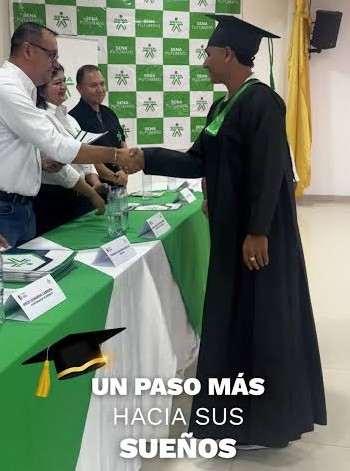

Proyecto 1: Graduarme como tecnólogo de ADSO en el SENA
Para mí, graduarme va mucho más allá de obtener un título; significa haber superado retos reales de programación, haber desarrollado la disciplina para construir soluciones funcionales desde cero y haber adquirido la capacidad de aprender de forma autónoma y constante. Cada proyecto, línea de código y consulta de base de datos que construyo en esta etapa está enfocado en prepararme con los más altos estándares para el mundo laboral.
